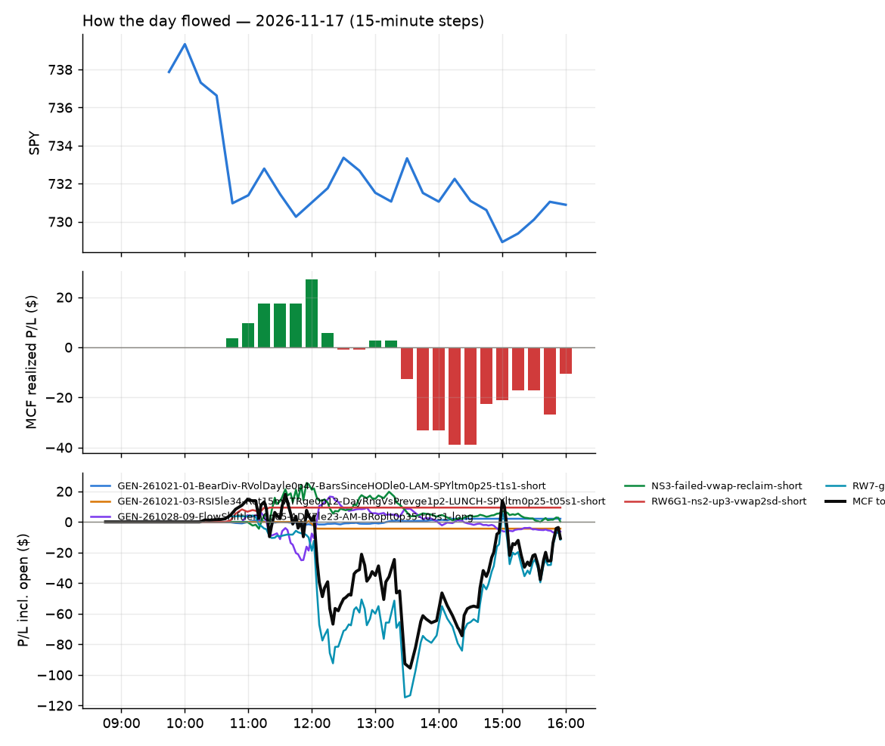
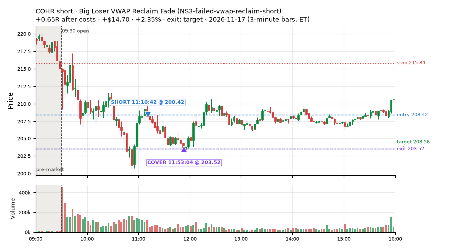
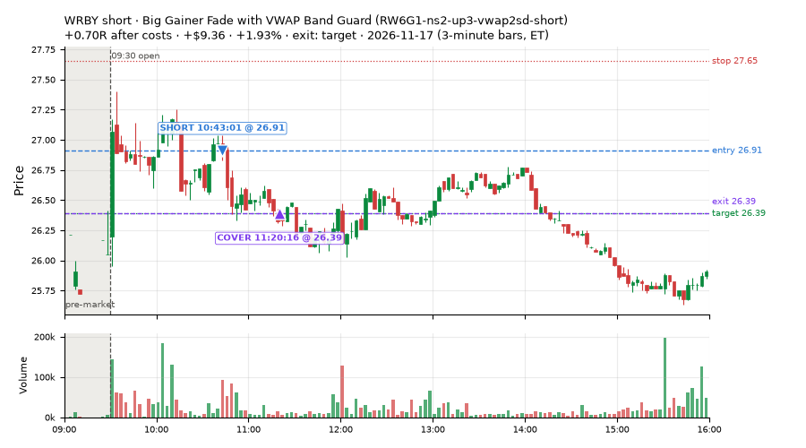
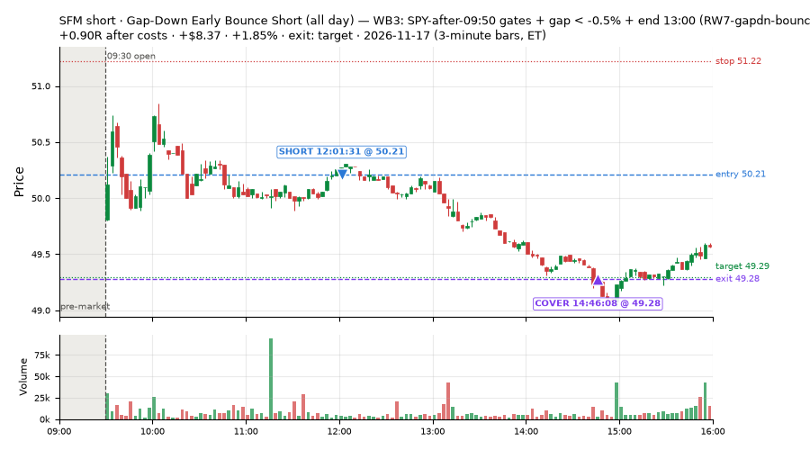
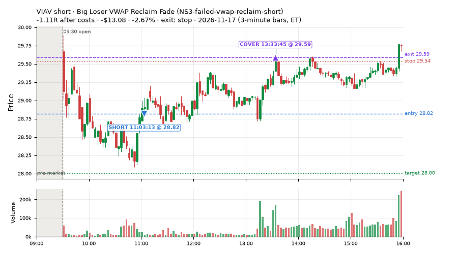
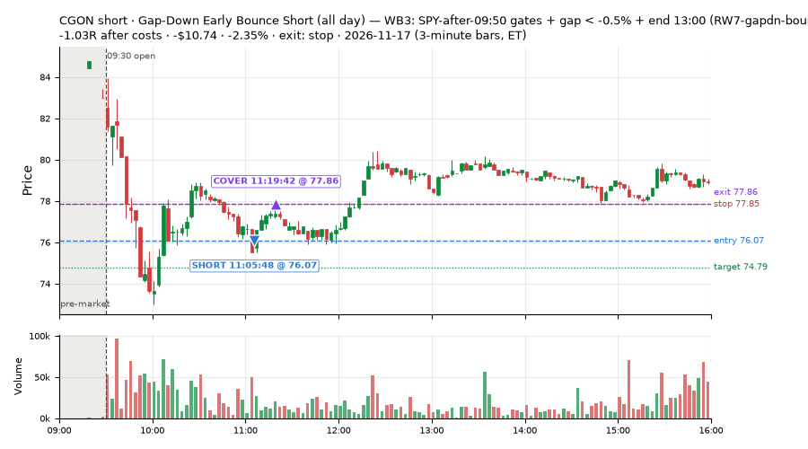
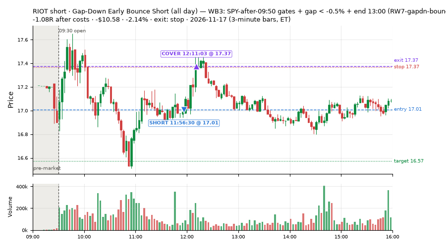
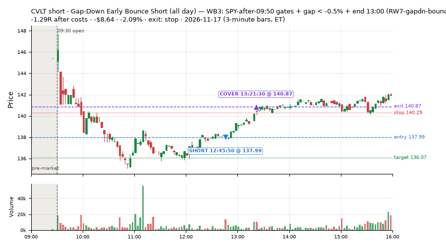
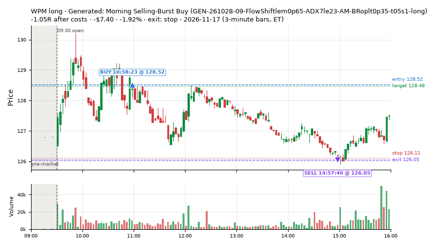

78 trades · win rate 62% · P/L $-10.70
PROBATION: no live setup has passed both locked test periods. 10 owner-directed setups added 2026-10-08 (MarcoFlow top 5 + 5 new), untested live. RW6G1 (RW6 + VWAP band guard) added 2026-10-09, probation.

| Symbol | Setup | Side | In | Out | Entry | Exit | Exit reason | % gained | P/L |
|---|---|---|---|---|---|---|---|---|---|
| COHR | Big Loser VWAP Reclaim Fade (NS3-failed-vwap-reclaim-short) | short | 11:10 | 11:53 | 208.42 | 203.52 | target | +2.35% | $14.70 |
| WRBY | Big Gainer Fade with VWAP Band Guard (RW6G1-ns2-up3-vwap2sd-short) | short | 10:43 | 11:20 | 26.91 | 26.39 | target | +1.93% | $9.36 |
| SFM | Gap-Down Early Bounce Short (all day) — WB3: SPY-after-09:50 gates + gap < -0.5% + end 13:00 (RW7-gapdn-bounce-early-short-FD-WB3) | short | 12:01 | 14:46 | 50.21 | 49.28 | target | +1.85% | $8.37 |
| Symbol | Setup | Side | In | Out | Entry | Exit | Exit reason | % lost | P/L |
|---|---|---|---|---|---|---|---|---|---|
| VIAV | NS3-failed-vwap-reclaim-short | short | 11:03 | 13:33 | 28.82 | 29.59 | stop | -2.67% | $-13.08 |
| CGON | RW7-gapdn-bounce-early-short-FD-WB3 | short | 11:05 | 11:19 | 76.07 | 77.86 | stop | -2.35% | $-10.74 |
| RIOT | RW7-gapdn-bounce-early-short-FD-WB3 | short | 11:56 | 12:11 | 17.01 | 17.37 | stop | -2.14% | $-10.58 |
| CVLT | RW7-gapdn-bounce-early-short-FD-WB3 | short | 12:45 | 13:21 | 137.99 | 140.87 | stop | -2.09% | $-8.64 |
| WPM | GEN-261028-09-FlowShiftlem0p65-ADX7le23-AM-BRoplt0p35-t05s1-long | long | 10:58 | 14:57 | 128.52 | 126.05 | stop | -1.92% | $-7.40 |








Signal to fill: median 2s, 90th percentile 3s (78 trades). Bars close each minute; the order follows the bar close.
Best excursion (MFE): median 0.33R; worst (MAE) median 0.60R. 37% of trades never got +0.25R in our favour; 0 reached +1R and still closed at or below 0.
| Symbol | Setup | Best R | Worst R | Closed R |
|---|---|---|---|---|
| MS | RW7-gapdn-bounce-early-short-FD-WB3 | +0.92 | -1.01 | -1.26 |
| C | RW7-gapdn-bounce-early-short-FD-WB3 | +0.67 | -1.02 | -1.11 |
| CHTR | RW7-gapdn-bounce-early-short-FD-WB3 | +0.48 | -1.06 | -1.06 |
| ADBE | RW7-gapdn-bounce-early-short-FD-WB3 | +0.36 | -1.00 | -1.13 |
| CVLT | RW7-gapdn-bounce-early-short-FD-WB3 | +0.16 | -1.13 | -1.29 |
| Entry time | Trades | Win | Avg R | P/L |
|---|---|---|---|---|
| 09:50-10:30 | 1 | 100% | +0.82 | $3.65 |
| 10:30-11:30 | 34 | 68% | -0.13 | $-10.79 |
| 11:30-13:00 | 42 | 55% | -0.06 | $-11.16 |
| 13:00-14:00 | 1 | 100% | +0.97 | $7.60 |
| Setup | Trades | Win | Avg R after costs | Adj R (net of SPY) | Avg R ex-market (all sessions) | P/L |
|---|---|---|---|---|---|---|
| Generated: Late-AM Divergence Short (quiet) (GEN-261021-01-BearDiv-RVolDayle0p47-BarsSinceHODle0-LAM-SPYltm0p25-t1s1-short) | 1.0 | 100% | +0.56 | +0.16 | – | $2.07 |
| Generated: Lunch Wide-Range Short (SPY down) (GEN-261021-03-RSI5le34-Ret15mATRge0p12-DayRngVsPrevge1p2-LUNCH-SPYltm0p25-t05s1-short) | 1.0 | 0% | -1.13 | -0.40 | – | $-4.40 |
| Generated: Morning Selling-Burst Buy (GEN-261028-09-FlowShiftlem0p65-ADX7le23-AM-BRoplt0p35-t05s1-long) | 27.0 | 74% | -0.11 | -0.22 | -0.17 (beta +0.70, n 40) | $-6.28 |
| Big Loser VWAP Reclaim Fade (NS3-failed-vwap-reclaim-short) owner-directed; holdouts once: Sep-Oct +0.119R n65, Apr-Jun -0.136R n524 | 3.0 | 33% | -0.19 | -0.24 | +0.15 (beta -0.80, n 7) | $0.11 |
| Big Gainer Fade with VWAP Band Guard (RW6G1-ns2-up3-vwap2sd-short) owner-directed; two-year history +0.26R n424 t2.39 (required 4.76), positive up and down sessions; locked block not scored | 1.0 | 100% | +0.70 | +0.75 | +0.77 (beta +0.05, n 5) | $9.36 |
| Gap-Down Early Bounce Short (all day) — WB3: SPY-after-09:50 gates + gap < -0.5% + end 13:00 (RW7-gapdn-bounce-early-short-FD-WB3) | 45.0 | 56% | -0.03 | -0.11 | -0.10 (beta -1.84, n 45) | $-11.56 |
Market direction (SPY, beta 1) accounted for $29.43 of today's $-10.70; the rest ($-40.13) came from the setups themselves. Avg R net of SPY: -0.14 (incl. a hedge leg's cost; report only).
25 setups live today. Today: 126 signals, 78 taken, 1 lost because another setup held the symbol (1%). Since 2026-11-12 (4 sessions): 470 signals, 218 taken, 2 lost to other setups (0%). Peak open positions today 45 of 400 slots. Earnings blackout removed 329 symbols before scanning.
Simulated playing time (not live): 252 what-if trades of signals not taken, avg -0.09R, 48% winners; of them 2 lost to another setup (avg +0.45R).
Silent: CWT04-backside-lh-a25-short, IDX5-spy050-0945-3x-trail, LD8-spy-dip030-breadthturn-spxl-holdtr-long, LIQ-pdl-sweep-open15-vwap-long
| Prio | Setup | Today sig / taken | Sessions | Signals / taken / trades | Taken/day | Expected/day | Lost to other setups | Lost to (setup n) | Top skip reasons | SIMULATED: not-taken n / avg R / win | Verdict |
|---|---|---|---|---|---|---|---|---|---|---|---|
| 1 | Late-Day ETF Dip Buy — WB4: more dips (refire, looser DI, falling-hour guard) NM-ETF-late-dip-di-long-WB4 | 1 / 0 | 1 | 1 / 0 / 0 | 0.00 | – | 0 | – | other 1 | 1 / +0.38R / 100% | slow no entries yet |
| 2 | Gap-Down Early Bounce Short (all day) — WB3: SPY-after-09:50 gates + gap < -0.5% + end 13:00 RW7-gapdn-bounce-early-short-FD-WB3 | 60 / 45 | 1 | 60 / 45 / 45 | 45.00 | – | 1 | GEN-261028-09-FlowShiftlem0p65-ADX7le23-AM-BRoplt0p35-t05s1-long 1 | spread / quote / size 10, not shortable / shorts off 4, symbol held by another setup 1 | 15 / +0.01R / 53% | ok 225.0 entries/week |
| 3 | Monday Weak-RS NS3 Short (near-miss) — WB3: reclaim volume >= 0.45x, from 10:05 NM-RWN5-ns3-mon-weakrs-short-WB3 | 0 / 0 | 1 | 0 / 0 / 0 | 0.00 | – | 0 | – | – | 0 / – | quiet - wait no signals in 1 session(s); too early to tell |
| 4 | Generated: Lunch New-Low Short (selling) — WB1: down >= 1.3 ATR on the day GEN-261026-03-NewLOD-Flow3lem0p37-FromOpenATRlem0p78-LUNCH-BRopgt0p5-holdtr-short-WB1 | 0 / 0 | 1 | 0 / 0 / 0 | 0.00 | – | 0 | – | – | 0 / – | quiet - wait no signals in 1 session(s); too early to tell |
| 5 | Backside Lower-High Short (big runner) CWT04-backside-lh-a25-short | 0 / 0 | 4 | 0 / 0 / 0 | 0.00 | – | 0 | – | – | 0 / – | silent no signals in 4 session(s); no expected rate on file |
| 6 | Generated: Late Uptrend Dip Buy (up day) GEN-261026-09-BBpctle0p3-SMA20slopege0p46-FromPCATRge0p45-LATE-BRvwgt0p6-t05s05-long | 0 / 0 | 2 | 0 / 0 / 0 | 0.00 | – | 0 | – | – | 0 / – | quiet - wait no signals in 2 session(s); too early to tell |
| 7 | Generated: PM New-Low Buy (strong mkt) GEN-261023-05-NewLOD-SMA20dlem0p94-ORLdistlem0p24-PM-BRopgt0p65-hold-long | 0 / 0 | 2 | 0 / 0 / 0 | 0.00 | – | 0 | – | – | 0 / – | quiet - wait no signals in 2 session(s); too early to tell |
| 8 | Generated: Open Below-VWAP Turn Buy (QQQ up) GEN-261021-10-MACDhge0p079-VWAPbarslem7-OPEN-QQQup-t1s05-long | 0 / 0 | 2 | 0 / 0 / 0 | 0.00 | – | 0 | – | – | 0 / – | quiet - wait no signals in 2 session(s); too early to tell |
| 9 | Generated: Lunch Wide-Range Short (SPY down) GEN-261021-03-RSI5le34-Ret15mATRge0p12-DayRngVsPrevge1p2-LUNCH-SPYltm0p25-t05s1-short | 1 / 1 | 2 | 1 / 1 / 1 | 0.50 | – | 0 | – | – | 0 / – | slow 2.5 entries/week; ~24 weeks to 60 trades |
| 10 | Generated: PM Big Red Bar Buy (up day) GEN-261028-10-BarRngATRge0p18-Flow3lem0p54-FromPCATRge0p28-PM-SPYgt0p5-hold-long | 0 / 0 | 2 | 0 / 0 / 0 | 0.00 | – | 0 | – | – | 0 / – | quiet - wait no signals in 2 session(s); too early to tell |
| 11 | Generated: Late Failed-Breakdown Pop Short GEN-261023-09-ORBfailDn-Ret15mge0p54-LATE-BRvwgt0p7-holdtr-short | 0 / 0 | 2 | 0 / 0 / 0 | 0.00 | – | 0 | – | – | 0 / – | quiet - wait no signals in 2 session(s); too early to tell |
| 12 | Generated: Late-AM Divergence Short (quiet) GEN-261021-01-BearDiv-RVolDayle0p47-BarsSinceHODle0-LAM-SPYltm0p25-t1s1-short | 1 / 1 | 2 | 3 / 1 / 1 | 0.50 | – | 0 | – | spread / quote / size 1, other 1 | 2 / +0.79R / 100% | slow 2.5 entries/week; ~24 weeks to 60 trades |
| 13 | Index Dip Bounce 5 3x S&P IDX5-spy050-0945-3x-trail | 0 / 0 | 4 | 0 / 0 / 0 | 0.00 | – | 0 | – | – | 0 / – | silent no signals in 4 session(s); no expected rate on file |
| 14 | * SPY Dip of 0.30%, Breadth Turn (SPXL, trailing) (near-miss) LD8-spy-dip030-breadthturn-spxl-holdtr-long | 0 / 0 | 4 | 0 / 0 / 0 | 0.00 | – | 0 | – | – | 0 / – | silent no signals in 4 session(s); no expected rate on file |
| 15 | Prior-Day Low Sweep Reversal to VWAP LIQ-pdl-sweep-open15-vwap-long | 0 / 0 | 4 | 0 / 0 / 0 | 0.00 | – | 0 | – | – | 0 / – | silent no signals in 4 session(s); no expected rate on file |
| 16 | Big Gainer Fade with VWAP Band Guard RW6G1-ns2-up3-vwap2sd-short | 1 / 1 | 4 | 7 / 5 / 5 | 1.25 | 0.40 | 0 | – | spread / quote / size 1, other 1 | 2 / +0.96R / 100% | slow 6.2 entries/week; ~10 weeks to 60 trades |
| 17 | Generated: Morning Selling-Burst Buy GEN-261028-09-FlowShiftlem0p65-ADX7le23-AM-BRoplt0p35-t05s1-long | 51 / 27 | 2 | 77 / 40 / 40 | 20.00 | – | 0 | – | spread / quote / size 23, other 13, broker rejected 1 | 37 / -0.02R / 65% | ok 100.0 entries/week |
| 18 | Generated: Morning New-High Short (SPY down) GEN-261019-08-NewHOD-Slope6ge0p03-DayRngVsPrevge1p5-AM-SPYdn-hold-short | 4 / 0 | 2 | 8 / 0 / 0 | 0.00 | – | 0 | – | other 5, spread / quote / size 2, not shortable / shorts off 1 | 8 / +1.16R / 75% | slow no entries yet |
| 19 | Generated: Late Pullback Buy (MACD rising) GEN-261027-01-MACDhge0p12-Ret15mATRlem0p069-LATE-BRvwgt0p5-t05s1-long | 0 / 0 | 4 | 7 / 2 / 2 | 0.50 | – | 0 | – | spread / quote / size 4, other 1 | 5 / +0.21R / 60% | slow 2.5 entries/week; ~24 weeks to 60 trades |
| 20 | Generated: Open Up-Day Bounce Short GEN-261026-05-Ret15mATRge0p042-FromPCATRge0p28-ORHdistlem0p38-OPEN-BRopgt0p5-hold-short | 0 / 0 | 2 | 0 / 0 / 0 | 0.00 | – | 0 | – | – | 0 / – | quiet - wait no signals in 2 session(s); too early to tell |
| 21 | Generated: Morning RSI Surge Buy GEN-261020-07-RSIslopege19-LowWickge0p33-ATRdge4p4-AM-BRvwgt0p7-hold-long | 0 / 0 | 2 | 0 / 0 / 0 | 0.00 | – | 0 | – | – | 0 / – | quiet - wait no signals in 2 session(s); too early to tell |
| 22 | Generated: Morning Up-Stock Dip Short GEN-261027-07-RSI14le35-FromOpenge2-AM-BRvwlt0p5-t1s1-short | 0 / 0 | 4 | 113 / 31 / 31 | 7.75 | – | 0 | – | not shortable / shorts off 46, spread / quote / size 26, other 10 | 82 / -0.27R / 38% | ok 38.8 entries/week |
| 23 | Generated: Morning Weak-Bounce Short (quiet) GEN-261022-08-EMAdChglem0p094-Flow3ge1-RVolDayle0p59-AM-SPYgt0p25-holdtr-short | 0 / 0 | 2 | 0 / 0 / 0 | 0.00 | – | 0 | – | – | 0 / – | quiet - wait no signals in 2 session(s); too early to tell |
| 24 | Big Loser VWAP Reclaim Fade NS3-failed-vwap-reclaim-short | 5 / 3 | 4 | 13 / 7 / 7 | 1.75 | 3.03 | 0 | – | spread / quote / size 4, not shortable / shorts off 2 | 6 / +0.58R / 83% | slow 8.8 entries/week; ~7 weeks to 60 trades |
| 25 | Big Gainer Dip-and-Pop (all day) NS1-rsidip-rsi5pop-long-FD | 2 / 0 | 4 | 16 / 9 / 9 | 2.25 | 5.39 | 1 | GEN-261027-07-RSI14le35-FromOpenge2-AM-BRvwlt0p5-t1s1-short 1 | spread / quote / size 3, other 2, symbol held by another setup 1 | 7 / -0.15R / 57% | slow 11.2 entries/week; ~5 weeks to 60 trades |
Every trade is attached as a CSV you can open and edit in Excel or Google Sheets. Live page: https://misiti15.github.io/MCF/live/